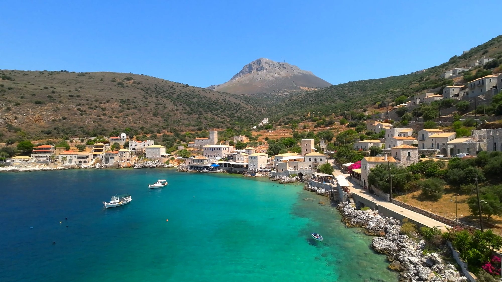
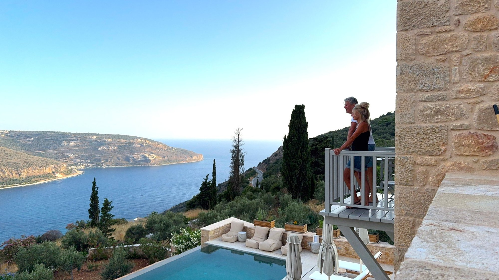
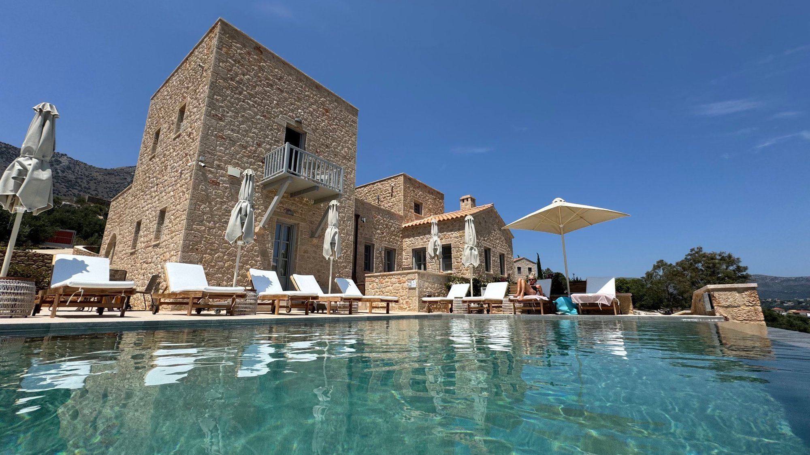
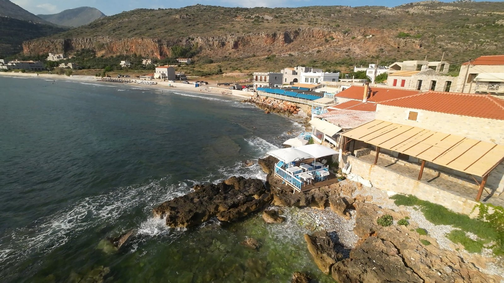

LIMENI – PICTURE PERFECT GREECE
There are places that make you stop in your tracks, reach for your camera and immediately wonder why you haven't visited before. Limeni is definitely one of them. Tucked into the coastline of the Mani Peninsula, this tiny stone-built fishing village is quite possibly one of the prettiest spots in the Peloponnese. With its traditional tower houses perched right on the water's edge, impossibly turquoise sea and a handful of waterfront tavernas, it looks almost too beautiful to be real.
We hadn't chosen Limeni as our base, but it was firmly on our list of places to visit. And it certainly didn't disappoint. Sometimes a place doesn't need to be big, busy or packed with attractions to make an impression. Limeni simply turns up, looks spectacular and lets the scenery do all the talking.
LIMENI – A HARBOUR STRAIGHT OUT OF A POSTCARD

Limeni is a tiny historic harbour village, just a short drive from Areopoli, which historically served as the port for the town sitting a little further inland. Its distinctive stone architecture is typical of the Mani region, where imposing tower houses and fortified buildings tell stories of a rather turbulent past.
But it's the setting that really steals the show.
The buildings appear to rise straight out of the rocks, with their foundations practically dipping into the crystal-clear waters of Oitylo Bay. There isn't a traditional sandy beach here. Instead, stone steps lead down into the sea, making it more of a giant natural swimming pool than a beach resort.
And what water! Deep shades of blue and turquoise, so clear that you can see straight down into the depths. Sea turtles are occasionally spotted swimming around the harbour, which makes an already pretty special swimming experience even more memorable.
Along the waterfront, a small collection of tavernas and restaurants make the most of their enviable positions. Fresh seafood is the speciality, with local dishes such as astakomakaronada – lobster spaghetti – featuring on menus. It's the sort of place where you could easily settle down for a long lunch, order something delicious and spend an unreasonable amount of time watching the water.
Not that anyone would blame you.
OUR EXPERIENCE – BEAUTY COMES AT A PRICE!
We didn't stay in Limeni itself, choosing instead to base ourselves about 20 minutes away in the hillside village of Oitylo. But we made the trip down to Limeni to experience this little slice of paradise.
And what a view!
It's one of those places where you find yourself constantly looking in every direction, because everywhere you turn there's another picture-perfect scene. The harbour, the stone buildings, the boats bobbing gently on the water and that extraordinary sea. It's jaw-droppingly beautiful.
Getting there, however, is another matter. Parking is limited, with mostly on-street spaces, and during the busy summer months the village can become very crowded. Given its size and popularity, that's hardly surprising.
It's worth arriving early or visiting later in the day if you want a better chance of finding somewhere to park. But even if you only manage a short visit, Limeni is well worth putting on your Mani Peninsula itinerary.
OITYLO – THE BEST KEPT SECRET IN GREECE?
If Limeni is the glamorous little sister who knows she's beautiful, Oitylo is the quieter one who doesn't need to shout about it.
Perched high above Oitylo Bay on the slopes of the Taygetos Mountains, the traditional village of Oitylo offers a completely different perspective of this spectacular coastline. Rather than sitting beside the sea, it looks down over it, with sweeping views across the bay towards Limeni and the wider Messinian Gulf.
This is a more traditional, peaceful side of the Mani Peninsula, where mountain villages, stone buildings and winding roads create a feeling of being a million miles away from the usual tourist hotspots.
It's important to distinguish between Old Oitylo, which sits higher up in the hills, and Neo Oitylo and Karavostasi, the coastal settlements below. Down by the water you'll find pebble beaches, accommodation and seaside tavernas, while the old village offers the elevated setting and dramatic views that make this area so special.
And this is where we chose to stay.
OUR ACCOMMODATION – A VIEW WORTH STAYING IN FOR
Our apartment was perched high on the hillside, in an elevated position that delivered the sort of views that make you want to take up painting. Not that my artistic abilities extend much beyond a decent stick figure, but even I was tempted.
We had front-row seats to the drama of the Taygetos Mountains on one side and the sparkling waters of the Messinian Gulf on the other. To put it mildly, it was cinematic.

The property had just three apartments, but during our stay we were the only guests, which meant we practically had the place to ourselves. And what a place it was.
An infinity pool overlooked the landscape, surrounded by beautiful cream-coloured loungers and parasols. The water was a gorgeous crystal-clear turquoise, and the whole setting had a distinctly Bali-inspired feel. It was straight out of a lifestyle magazine – the sort where everyone looks effortlessly relaxed, drinks something colourful and never seems to have to worry about washing up.

Our apartment was on the first floor and had everything we needed: a kitchen, bathroom, dining table and chairs, and a bedroom with double doors opening directly onto the view. Outside, a balcony provided the perfect spot for early-morning pastries and prosecco.
It's difficult to imagine a better way to start the day.
There is, however, a small catch. This isn't somewhere you can simply wander out for an evening stroll to the nearest restaurant. Its hillside location is quite remote, so a hire car is essential. But if you're looking for somewhere peaceful, away from the crowds, with spectacular scenery and a pool to spend lazy afternoons beside, it's hard to beat.
And despite feeling wonderfully secluded, you're still within reasonable driving distance of Limeni, Areopoli, Stoupa, Agios Nikolaos and Kardamyli.
For us, it was the perfect combination of getting away from it all while still having plenty of places to explore.
BEST THINGS TO SEE AND DO AROUND LIMENI AND OITYLO
Although the temptation might be to spend most of your time admiring the views (or sitting beside the pool with a drink), there's plenty to explore in this part of the Mani Peninsula.

- Explore Limeni Harbour: Wander along the waterfront, admire the traditional stone tower houses and enjoy a drink or meal overlooking the sea.
- Go swimming: The clear waters around Limeni are wonderful for a refreshing dip. Remember that access is mainly via stone steps rather than a sandy beach.
- Visit Areopoli: Just a short drive inland, this historic town is full of character, with cobbled streets, traditional architecture, little shops and atmospheric squares.
- Discover Diros Caves: One of the region's most impressive natural attractions, famous for its extraordinary underground formations and boat trips through the caves.
- Explore Neo Oitylo and Karavostasi: Head down towards the coast for pebble beaches, seaside tavernas and a more relaxed beachside atmosphere.
- Take a coastal road trip: The surrounding Mani coastline is full of beautiful villages and unexpected discoveries, including Gerolimenas and the dramatic southern reaches of the peninsula.
PRACTICAL TIPS FOR VISITING LIMENI AND OITYLO
- Getting there: Limeni and Oitylo are approximately 1.5–2 hours by car from Kalamata International Airport, depending on your route and starting point. A hire car is essential if you want to explore this part of the Mani.
- Parking: Limeni has very limited on-street parking. In July and August, expect it to be busy, particularly around lunchtime.
- Swimming: Don't expect sandy beaches in Limeni. Swimming is from stone steps and rocky access points, so water shoes are useful.
- Where to stay: Limeni offers waterfront accommodation, while Oitylo and the surrounding hillsides are ideal if you prefer peace, privacy and spectacular views. Neo Oitylo and Karavostasi are better choices if you want to be closer to the beach.
- Best time to visit: May and June, or September and October, offer lovely conditions with fewer crowds than the height of summer.
OUR VERDICT – IS LIMENI AND OITYLO WORTH VISITING?
Absolutely. In fact, this is one of those corners of the Peloponnese that deserves far more attention.
Limeni is undeniably beautiful, a tiny harbour village with extraordinary water and scenery that will have your camera working overtime. Oitylo, meanwhile, offers a quieter, more authentic experience, with breathtaking views and the perfect setting for a relaxing escape.
We loved having the best of both worlds: the picture-perfect harbour just down the road and our own peaceful hillside retreat waiting for us at the end of the day.
If you're exploring the Mani Peninsula, don't just stop at Limeni for a photograph and move on. Stay a little longer, explore the surrounding villages and, if you can, find yourself somewhere high above the bay.
You might just discover your own little slice of Greece.